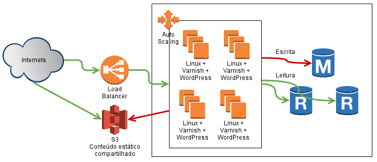
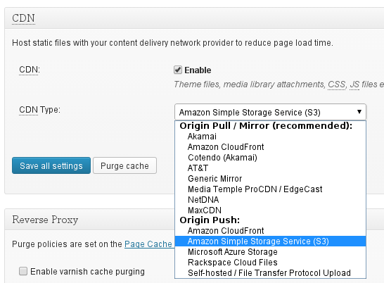
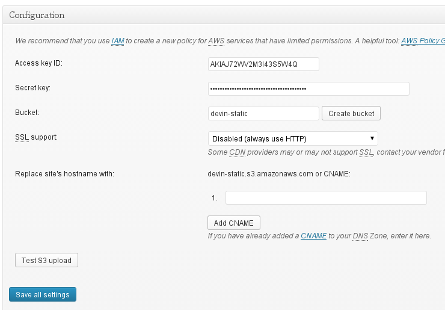

Escalando o

na Nuvem
Por Hugo Cisneiros | http://www.devin.com.br
Movile: http://www.movile.com
Por que nuvem?
Por que nuvem?
- Na apresentação do ano passado, falei sobre desempenho....
- Mesmo com muito desempenho, às vezes precisamos crescer rápido!
- Com o WordPress na nuvem, podemos crescer horizontalmente.
Atenção!
Este é um guia rápido para escalar o WordPress na nuvem, mas cada caso é um caso!
Uso aqui a Amazon Web Services (AWS), mas poderia ser aplicado em outros serviços.
Repito: Não existe receita de bolo!

(Nem de pizza)
Uma plataforma de nuvem
- Estamos em 2014, a computação é um recurso escalável...
- Sem nos preocupar com hardware, crescemos horizontalmente: colocamos e tiramos servidores a qualquer momento, dependendo da necessidade.
- Se uma máquina dá pau, é só trocar ela por outra.
- Escalar na nuvem significa automatizar todo esse processo.
Usando a Amazon Web Services
- Criaremos na AWS:
- 3 servidores de banco de dados (1 RDS Master, 2 Réplicas de leitura);
- 2 ou mais servidores Linux com Varnish (Cache) e Web Server (WordPress);
- 1 Load Balancer na frente dos servidores Linux;
- 1 Auto Scaling Group para controlar a quantidade de servidores Linux
- 1 armazenamento S3 para itens estáticos (p.ex.: imagens)
Resumindo:

Resumindo:
Parece tudo lindo!
Mas mostre-me tudo!
Configurações no S3 ou um servidor qualquer
Em um S3, eu coloco as configurações e comandos que vou usar nos servidores.
- Configurações do servidor web
- Configurações do cache varnish
- Script de deploy contínuo
Quando um novo servidor inicia...
- Ele executa os diversos comandos que pedi: instala, usa as configurações do S3...
- O script de deploy é iniciado e o WordPress instalado
- O health check do Load Balancer dá OK e ela começa a servir os usuários
Se o servidor dá defeito...
- Ele é retirado imediatamente do load balancer.
- A gente destrói o servidor ao invés de tentar consertar e cria um novo.
- O novo servidor entra no lugar como se nada tivesse acontecido.
A melhor maneira de efetuar deploys e gerenciar a configuração!
Use o Opscode CHEF!
Ele te ajuda a mudar as configurações mais facilmente e mantê-las sincronizadas entre todos os servidores!
Um pacote de WordPress já pronto
- Crie uma máquina de "staging" e faça as modificações do WordPress necessárias nela.
- Ao terminar, compacte em um arquivo .tar.gz e mande para o S3.
- Atualize o arquivo de update e os servidores vão todos pegar o novo pacote!
Atenção!
Você vai perder aquela "comodidade" de sair editando os arquivos diretamente nos servidores! ;)
Alguns probleminhas dessa configuração
- SESSÕES: Não vai poder usar, a não ser que você tenha um memcache na rede e colocá-las tudo por lá (uma ótima ideia!)
- ARQUIVOS DE CACHE LOCAIS: Esqueçam deles! Se seu plugin faz isso, então ele não é facilmente escalável.
O WordPress e o HyperDB
Lembra que tínhamos 3 servidores de banco de dados?
Pra que?
O WordPress e o HyperDB
Com o HyperDB, configuramos um master para as escritas e todos os 3 para leitura:
// master apenas para escrever
$wpdb->add_database(array(
'host' => 'devin-demo-master.cjx43gsy2jq0.us-east-1.rds.amazonaws.com',
'user' => 'devin',
'password' => 'abc123',
'name' => 'devin',
'write' => 1,
'read' => 1,
));
// primeiro slave local
$wpdb->add_database(array(
'host' => 'devin-demo-slave1.cjx43gsy2jq0.us-east-1.rds.amazonaws.com',
'user' => 'devin',
'password' => 'abc123',
'name' => 'devin',
'write' => 0,
'read' => 1,
));
// segundo slave local
$wpdb->add_database(array(
'host' => 'devin-demo-slave2.cjx43gsy2jq0.us-east-1.rds.amazonaws.com',
'user' => 'devin',
'password' => 'abc123',
'name' => 'devin',
'write' => 0,
'read' => 1,
));
O WordPress e o HyperDB
Ou podemos separar um dos nós para funcionar apenas na busca:
// segundo slave local apenas para busca
$wpdb->add_database(array(
'host' => 'devin-demo-slave2.cjx43gsy2jq0.us-east-1.rds.amazonaws.com',
'user' => 'devin',
'password' => 'abc123',
'name' => 'devin',
'write' => 0,
'read' => 1,
'dataset' => 'busca',
));
$wpdb->add_callback('choose_db_search');
function choose_db_search() {
if (isset($_GET['s'])) {
return 'busca';
}
}
Ou até pra comer a tia do bátima!
$wpdb->add_callback('tia_do_batima');
function tia_do_batima($query) {
if (preg_match("/comer a tia do batima/i", $query) )
return 'mansao_wayne';
}
O WordPress e o HyperDB
Mais informações em:
http://www.devin.com.br/wordpress-hyperdb/
Um plugin de CDN - W3 Total Cache
- Você controla o que vai pra um host externo, o plugin converte as URLs pra você;
- Nesse caso usamos um S3, mas pode ser qualquer outro lugar!
- Pode usar para upload de imagens, itens do tema, js e css do wordpress, entre outros;
CDN - Configuração Principal

CDN - Configuração do S3

Tchau pra trabalheira de manter sistemas de arquivos compartilhados!

SEM cache
|
CPU: E7500 @ 2.93GHz 3GB de RAM apache2 + mod_php mysql 5.5 |
Concurrency Level: 50 Time taken for tests: 217.099 seconds Complete requests: 932 Requests per second: 4.29 [#/sec] (mean) Time per request: 11646.966 [ms] (mean) |
COM cache
|
CPU: E7500 @ 2.93GHz 3GB de RAM apache2 + mod_php mysql 5.5 |
Concurrency Level: 50 Time taken for tests: 1.602 seconds Complete requests: 10000 Requests per second: 6242.42 [#/sec] (mean) Time per request: 8.010 [ms] (mean) |
Obrigado! :)

Por Hugo Cisneiros | http://www.devin.com.br
Movile: http://www.movile.com
Gifs divertosas tiradas do DevOps Reactions e InfoSec Reactions